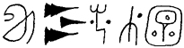

Though most of what we learned about the secessionists was in code, we found this useful bit of information just written there in their notes plain as day.
Kentuckians are particularly angry about .